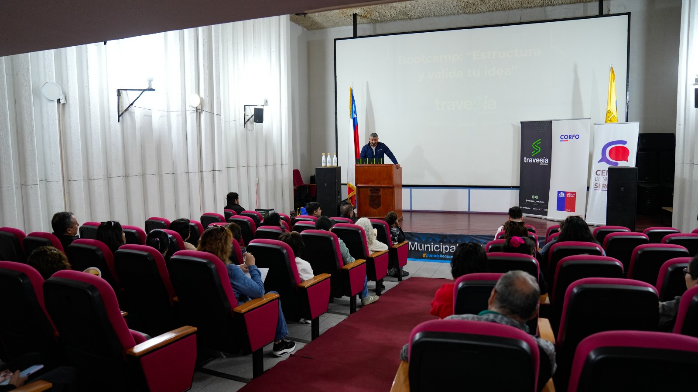
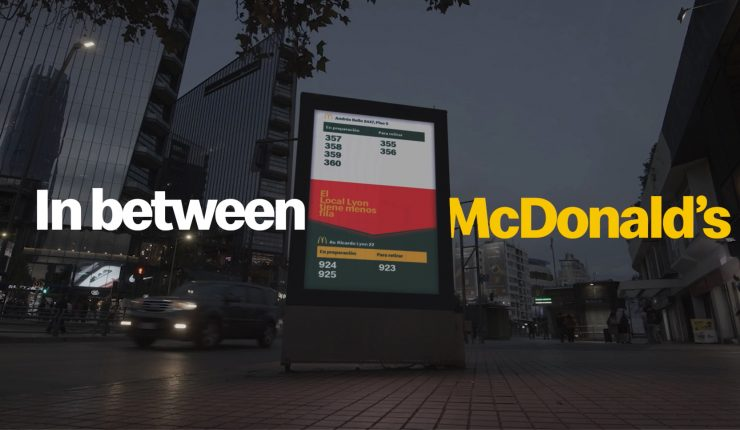

Noticias de Negocios
| Imagen | Título | Categoría | Texto del artículo |
|---|---|---|---|
| Sector inmobiliario en Chile proyecta repunte en 2026: Ventas de viviendas podrían subir hasta 30% | Inmobiliario |
Un informe del gremio de la construcción proyecta un crecimiento de 4,8% en la inversión del sector en 2026, impulsado por mejores condiciones de financiamiento, subsidios y una reactivación de la demanda. El sector inmobiliario en Chile comienza a mostrar señales de recuperación, con proyecciones que anticipan un repunte tanto en la inversión como en la venta de viviendas durante 2026. El gremio estima que las ventas podrían aumentar hasta un 30% anual, en un escenario marcado por una mejora en el acceso al crédito hipotecario y el impulso de políticas públicas como el subsidio a la tasa. |
|
|
 |
Emprendedores de Ovalle fortalecen sus negocios con una masiva jornada de capacitación y fomento | Emprendimiento |
Con la asistencia de cerca de 50 personas, se llevó a cabo en Ovalle una nueva jornada de apoyo al emprendimiento. El evento, denominado BootCamp y que forma parte del programa "Travesía" de CEDUC UCN, tuvo como objetivo principal descentralizar el acceso a la información técnica y potenciar las ventas de los pequeños negocios de la provincia del Limarí. La actividad, coordinada entre la oficina de Fomento Productivo del municipio y el Centro de Negocios Sercotec, buscó entregar herramientas digitales y de gestión comercial a microempresarios locales a través de asesorías personalizadas y talleres de marketing. |
|
 |
In Between McDonald's: La tecnología que ayuda a decidir en qué McDonald's comprar según la fila | Tecnología |
McDonald's presentó "In Between McDonald's", una iniciativa que busca optimizar la experiencia de los clientes mediante el uso de datos en tiempo real. El proyecto nació de un hallazgo particular en Santiago: en varios sectores comerciales, existen locales de la cadena ubicados a menos de 500 metros de distancia entre sí. La solución consistió en la instalación de pantallas digitales en la vía pública, situadas estratégicamente en el punto medio entre dos sucursales, permitiendo que los transeúntes vean en tiempo real cuántos pedidos están en preparación en cada local y así elegir el que registre menor tiempo de espera. |